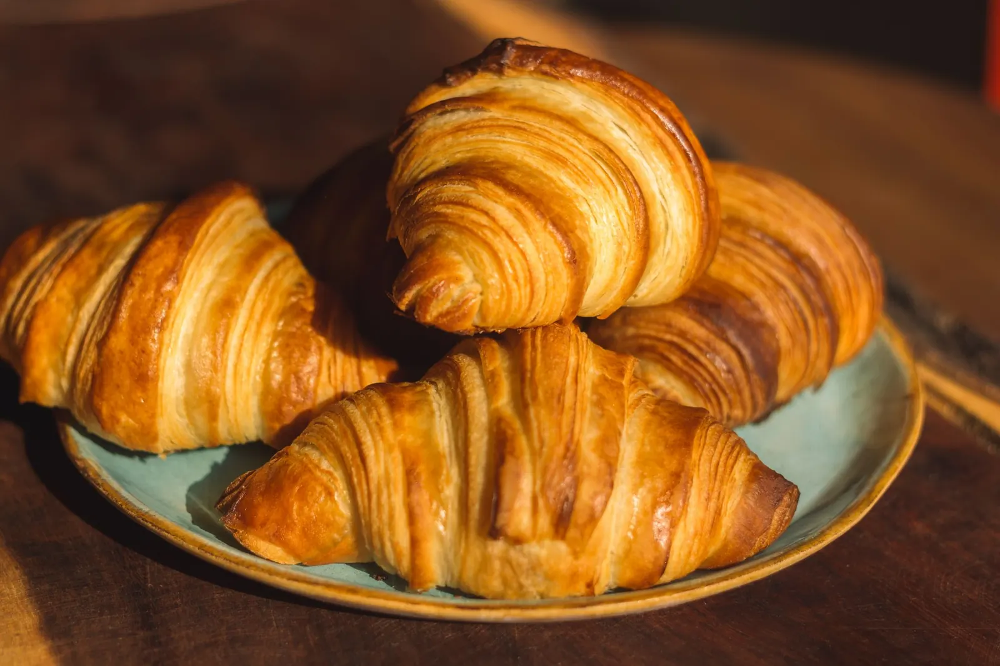
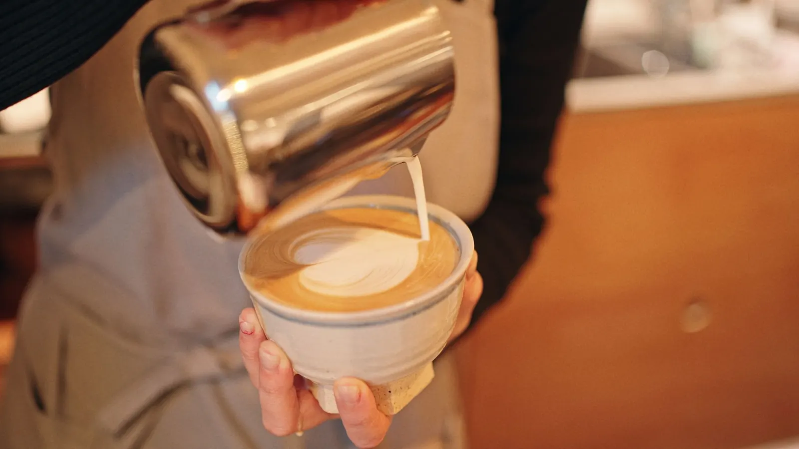
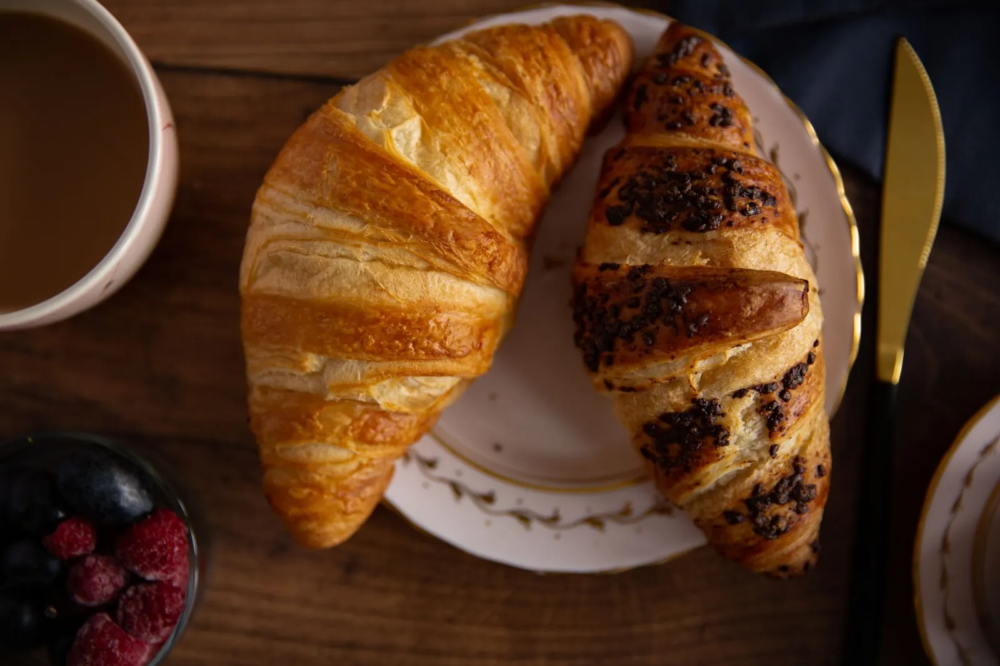
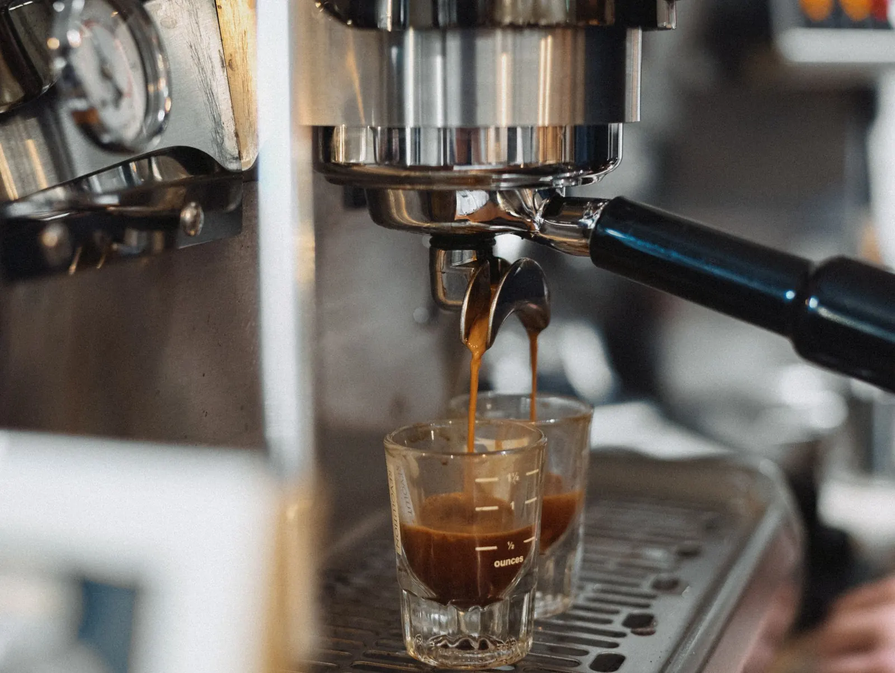
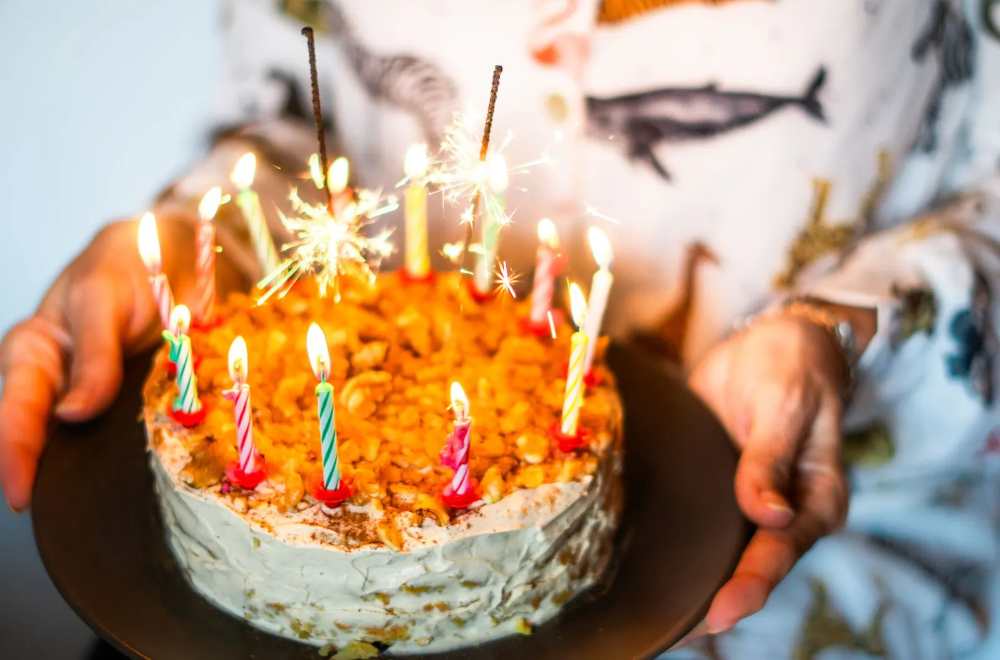

Wohin darf es gehen?
Bäckerei · seit 1998
Jeden Morgen frisch gebacken
Sauerteigbrot, Butterzopf und goldene Gipfeli – von Hand geformt in unserer Backstube mitten in der Altstadt von Demostadt.
Café · Kaffee, Frühstück & Apéro
Ihr Ort zum Ankommen
Ein Cappuccino am Fenster, ein langes Frühstück mit Freunden oder ein Spritz zum Feierabend – bei uns nehmen Sie sich Zeit.




Willkommen bei Democafé
Zwei Welten, ein Zuhause
Um vier Uhr morgens brennt bei uns schon Licht: Dann wird geknetet, geformt und gebacken – ohne Fertigmischungen, mit Mehl aus der Region und viel Geduld.
Gleich neben der Backstube liegt unser Café: knarrender Holzboden, weiche Sessel und Kaffee, den wir mit einer kleinen Rösterei aus der Region entwickelt haben.
Langzeitführung
Unsere Brote reifen bis zu 48 Stunden.
Eigene Hausmischung
Frisch geröstet, fair eingekauft.
Regional
Mehl, Milch und Butter aus der Umgebung.
Von Hand
Jeder Zopf wird von Hand geflochten.
Entdecken
Was darf es heute sein?

Die Karte
Frühstück, Mittagsmenü, Kaffee und Cocktails – plus unser ganzes Brot- und Gebäcksortiment.
Zur Karte
Kaffee-Guide
Vom Espresso bis zum Cold Brew: Schichten, Bohnen-Herkunft und Röstgrade einfach erklärt.
Mehr erfahren
Torten bestellen
Geburtstag, Hochzeit oder einfach so – stellen Sie Ihre Wunschtorte online zusammen.
Torte gestaltenKleine Pause
Der Duft von frischem Kaffee
Unsere Hausmischung «Altstadt» verbindet Bohnen aus Kolumbien und Äthiopien: schokoladig, mit einem Hauch Beeren. Jeder Espresso wird frisch gemahlen und von Hand getampt.
Öffnungszeiten
Wir sind für Sie da
Bäckerei
Mo–Fr 06:00–18:30
Sa 06:30–16:00 · So 07:30–12:00
Café
Mo–Fr 07:00–19:00
Sa 08:00–18:00 · So 08:30–17:00


Wir freuen uns auf Sie
Reservieren Sie Ihren Lieblingsplatz
Am Fenster, in der Leseecke oder auf der Terrasse – sagen Sie uns, wann Sie kommen.